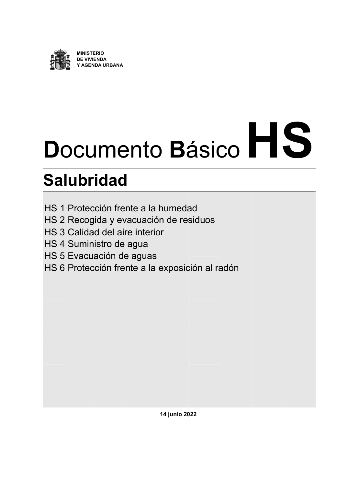

DB-HS · Fragmento de PDF p1 · versión 2022-06-14 · capa oficial
Formatos: JSON compacto · Markdown · PDF fuente
Ámbito del documento · texto del ámbito · documento y tablas
ID técnico a0003 · PDF pág. 1 · jerarquía no validada por persona · no es capítulo: fragmento_portada · padre: raíz · literal original en el contenido: «ocu lubr»
ocu lubr lubr Protecc Recogi 3 Calidad 4 Sumini 5 Evacua 6 Protecc ERIO NDA URBANA

PDF fuente redistribuible: copia fiel enlazada en esta página (SHA256 verificado).